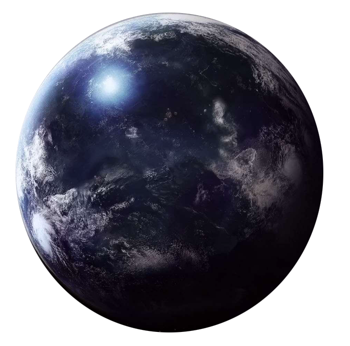

Dac
dac
Population: 27.5 Billion
Terrain: oceans, reefs
Orbital Metrics: 398 days per year / 21 hours per day
Languages: Mon Calamarian, Quarrenese, Basic
Major Cities: Aquarius, Coral City, Coral Depths, Foamwander, Heurkea
Areas of Interest: Mkbuto Seatree Preserve, Knowledge Bank
Major Exports: seafood, high technology, starships, weapons
Major Imports: foodstuffs, medicine, technology
Astronavigation Data
Known as Mon Calamari in official Republic and Imperial records, or simply Mon Cala, the ocean-covered world is called Dac by the native Mon Calamari and Quarren species. Mon Calamari is a relative newcomer to the Republic. Its remote location in the Outer Rim, away from the traditional major hyperroutes, deterred early exploration by ancient Republic scouts.
It was out in space where the Republic and Mon Calamari ships first made contact. The Mon Calamari were encouraged, and sought further study and communications with their new, fascinating neighbors. The Quarren were much more cautious. They feared the Mon Calamari were moving much too quickly. This division marked the end of a period of cooperation between the species. The division only got worse as the Republic deteriorated into the Empire.
The Empire wasted no time in taking control of the system and the shipyards. The Mon Calamari attempted to negotiate. When that failed, the Empire attacked, benefiting from friendly Quarren who believed Imperial control was necessary especially at the expense of the Mon Calamari.
The Imperials proved unable to convert the shipyards to produce Imperial standard craft. While they tried, Mon Calamari resistance groups organized and began fighting back through nonviolent means. Eventually, the Imperials retaliated with a devastating orbital bombardment against three floating cities.
Instead of buckling under the pressure, both the Mon Calamari and the Quarren openly fought back. They secretly modified many ships for combat and harassed the Imperial fleet incessantly. Eventually, the Imperials concluded that holding Mon Calamari wasn't worth the effort or losses due to the remote location. Finally, after the Battle of Yavin, the Mon Calamari openly and formally joined the Rebellion, one of the few worlds to openly do so. The system is now protected by Rebel starships, often coming right off Mon Calamari's own production lines.
Before embarking on interstellar exploration, the Mon Calamari and Quarren built an orbital ring of labs and construction facilities. From there, they designed and developed the starships and other equipment needed for exploration and potential colonization. The ring has since become an enormous facility with millions of designers, workers, and builders.
Mon Calamari ships, especially large and important ships, are typically built as pieces of art. While specific classes hold the same general shape and capabilities, every ship is customized and specialized according to the task and artistic whims of the builders.